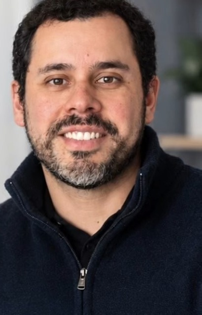

O profissional
Conheça o Dr. Eduardo Rocha.

Dr. Eduardo Augusto Andrade da Rocha
Médico Endocrinologista e Metabologista
CRM-RS 60761 | RQE 73103
Olá! Sou o Dr. Eduardo Augusto Andrade da Rocha, médico graduado pela Universidade Federal de Sergipe (UFS).
Ao longo da minha formação, realizei Residência Médica em Clínica Médica pelo Hospital do Servidor Público Estadual (IAMSPE), em São Paulo, e, na sequência, um ano opcional de Clínica Médica pela Universidade Federal de São Paulo (UNIFESP). Dei continuidade à minha formação com a Residência em Endocrinologia e Metabologia, também pela UNIFESP, e obtive o Título de Especialista em Endocrinologia e Metabologia pela Sociedade Brasileira de Endocrinologia e Metabologia (SBEM).
É um prazer poder cuidar da sua saúde com dedicação e atenção em cada etapa do seu tratamento.
- GraduaçãoUniversidade Federal de Sergipe (UFS)
- ResidênciasClínica Médica (IAMSPE e UNIFESP) e Endocrinologia e Metabologia (UNIFESP)
- TítuloEspecialista pela SBEM
- RegistroCRM-RS 60761 | RQE 73103
- PúblicoAdultos
- AtendimentoPresencial em Gravataí/RS e telemedicina
Como trabalho
Avaliação ampla
O ponto de partida é a sua história completa, não apenas o exame alterado.
Base científica
Tratamentos com base nas melhores evidências disponíveis, explicados com clareza.
Acompanhamento próximo
Retornos e ajustes ao longo do tempo, presencialmente ou a distância.
Agende sua consulta
Atendimento presencial em Gravataí/RS ou por telemedicina para todo o Brasil.